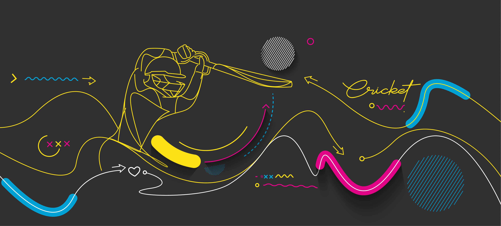
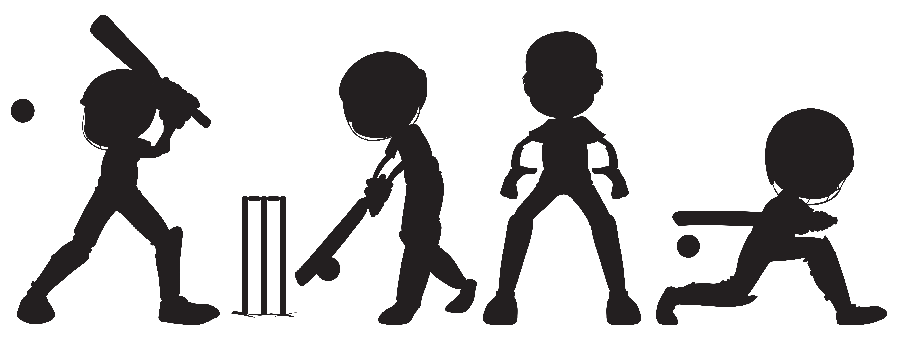

The Physics Behind Cricket: Unveiling the Science of the Game
July 21, 2024
Sports
Physics
Science

Cricket is a blend of skill and physics. Concepts like projectile motion, momentum, force, friction, and
aerodynamics shape every play. Understanding these principles can deepen your appreciation for the game.
Dive into the science behind cricket and see the sport in a new light!
Introduction
Cricket, a sport beloved by millions, is not just about skill and strategy; it’s also a fascinating interplay of physics principles. From the moment the bowler releases the ball to the instant the batsman strikes it, physics is at play. Let’s dive into the key physics concepts that make cricket such an intriguing game.1. Projectile Motion: The Art of Bowling and Batting
When a bowler delivers the ball, it follows a curved path due to gravity, known as projectile motion. The initial speed, angle of release, and spin imparted by the bowler determine the ball’s trajectory. Batsmen, on the other hand, must anticipate this path to time their shots perfectly. Understanding projectile motion helps players predict where the ball will land, making it a crucial aspect of both bowling and batting.2. Momentum: Powering the Game
Momentum, the product of mass and velocity, is a key factor in cricket. Bowlers generate momentum to deliver fast balls, while batsmen use it to hit the ball with power. When a batsman strikes the ball, the momentum transfer determines how far the ball will travel. Fielders also rely on momentum to catch or stop the ball effectively.3. Force and Acceleration: The Dynamics of Play
Newton’s Second Law of Motion, which states that force equals mass times acceleration (F = ma), is evident in every aspect of cricket. Bowlers apply force to accelerate the ball towards the batsman. The force exerted by the batsman on the ball determines its speed and direction. Fielders use force and acceleration to quickly move and react to the ball, making split-second decisions that can change the course of the game.
Looking for AI solutions for your business? Check out our latest products and services to accelerate your digital transformation journey.
4. Friction: The Hidden Factor
Friction plays a subtle yet significant role in cricket. The friction between the ball and the pitch affects how the ball bounces and spins. Spin bowlers exploit this by imparting spin on the ball, causing it to deviate from its expected path. The condition of the pitch, whether dry or damp, also influences the amount of friction and, consequently, the ball’s behavior.

5. Aerodynamics: Swing and Spin
The aerodynamics of a cricket ball, particularly its seam and surface roughness, influence its movement through the air. Fast bowlers use swing to make the ball move laterally, challenging the batsman’s ability to predict its path. Spin bowlers rely on the Magnus effect, where the ball’s spin creates a pressure difference, causing it to curve in the air. Mastery of aerodynamics allows bowlers to deceive batsmen and gain an edge.6. Energy Transfer: The Impact of a Shot
When a batsman strikes the ball, kinetic energy is transferred from the bat to the ball. The efficiency of this energy transfer depends on the bat’s material, the point of contact, and the speed of the swing. A well-timed shot maximizes energy transfer, sending the ball soaring towards the boundary. Understanding energy transfer helps batsmen refine their technique for more powerful and accurate shots.Conclusion
Cricket is a beautiful blend of art and science. The physics principles at play add depth to the game, making it not just a test of skill but also a demonstration of scientific concepts in action. Whether you’re a player or a fan, appreciating the role of physics in cricket can enhance your understanding and enjoyment of this timeless sport.Get the latest updates
Sign up for our newsletter
By signing up to our newsletter you agree to our
Terms of Service
and
Privacy policy